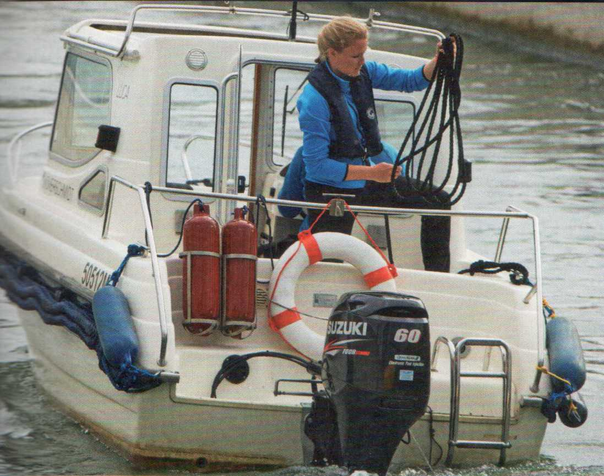
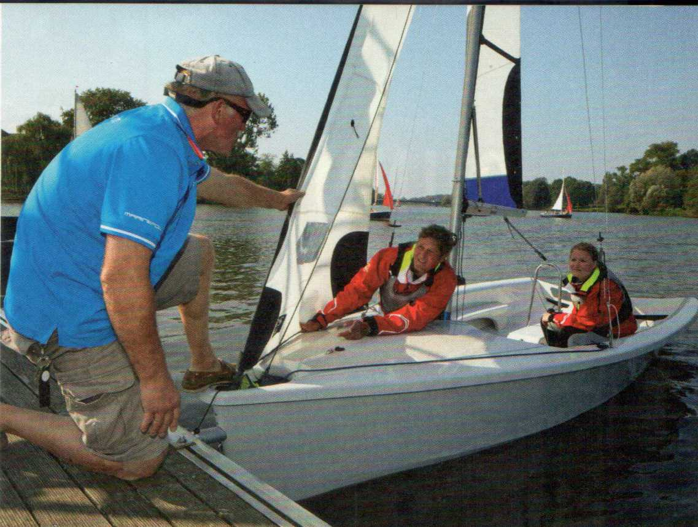

|
10 |
RUND UMS BOOT |
?.6 |
SEEMÄNNISCHE ARBEITEN |
36. |
THEORIE DES SEGELNS________ |
|
11 11 12 13 13 14 14 15 15 16 16 17 18 19 20 21 22 24 25 |
Der Rumpf Jollen, Kiel- und Mehrrumpfboote Rumpfformen Bug- und Heckformen Begriffe rund um den Rumpf Das Rigg Takelungsarten Mast und Spieren Stehendes Gut Laufendes Gut Taljen Das Segel Segelbezeichnungen Haupt- und Beisegel Reffen und Reffeinrichtungen Reffen des Vorsegels Ausrüstung und Beschläge Wie heißt was auf einer Jolle? Radsteuerung |
27 27 27 27 28 30 30 31 31 32 32 33 34 34 34 35 |
Tauwerk Das Material Die Herstellung Spleiß und Takling Knoten Palstek mit Trick Belegenauf einer Klampe Aufschießen einer Leine Aufschießen eines Falls Bootspflege Das Einwintern Die Frühjahrsüberholung Der Bootstransport Dachtransport Trailertransport Ab- und Aufslippen |
37 38 39 39 40 40 40 40 41 41 42 42 42 43 44 44 44 |
Richtungs- und Kursbezeichnungen Kurse zum Wind Wahrer und scheinbarer Wind Raumen und Schraten Die Antriebskräfte Antrieb durch Widerstand Antrieb durch Auftrieb Die Querkraft Der Anstellwinkel des Segels Die Windversetzung (Abdrift) Die Stabilität Die Formstabilität Die Gewichtsstabilität Luv- und Leegierigkeit Verdränger und Gleiter Die Rumpfgeschwindigkeit Dynamischer Auftrieb |
|
45 |
PRAXIS DES SEGELNS | ||||
|
46 46 46 48 49 50 50 50 51 51 51 53 54 54 55 56 57 57 58 58 60 62 63 64 64 |
Segel anschlagen Anschlägen des Großsegels Anschlägen der Fock Segel setzen Trimm der Fock Trimm des Großsegels Bergen der Fock Bergen des Großsegels Auftuchen des Großsegels Achteraussegeln Ablegen vom Steg Ablegen von der Boje Der Nahezu-Aufschießer Anlegen am Steg Anlegen an der Boje Anlegen vordem Wind Die Segelstellung |
65 66 67 67 67 67 68 68 69 69 69 70 72 74 75 76 77 79 79 80 \ 80 80 81 |
Die Schwertstellung Die Position der Crew Segeln mit halbem und raumem Wind Die Segelstellung Die Schwertstellung Die Position der Crew Die Segelstellung Die Schwertstellung Die Position der Crew Die Regattahalse Die Gefahrenhalse Ziel in Lee Mensch über Bord-was tun? Das Manöver Mensch an Bord |
85 85 85 86 88 89 89 90 90 90 91 92 92 92 93 94 94 95 96 97 97 97 97 |
Das Abwettern von Böen Beidrehen / Beiliegen Was tun nach dem Kentern? Die Stromversetzung Schleppen und geschleppt werden Verhalten auf dem Schlepper Verhalten auf dem geschleppten Boot Der Schleppverband Ankertypen Ankerleine und Ankerkette Der Ankerplatz Das Ankern Ankerlichten Feuerlöscher Radarreflektoren Binnenschifffahrtsfunk |


|
98 |
WETTERKUNDE |
102 |
VERKEHRSKUNDE | ||
|
99 99 100 100 100 |
Hoch und Tief Land- und Seewind Gewitter Sturmwarnungen Die Beaufort-Skala |
103 104 104 105 105 106 106 107 HO 110 HO 111 112 113 114 115 |
Die Verkehrsvorschriften Kleinfahrzeuge Schiffsführung und Sorgfaltspflicht Führerscheine auf Binnenschifffahrtsstraßen und Schiffspapiere Die Kennzeichnung Flaggenführung Allgemeine Höflichkeitsregeln Fahrrinnen- und Fahrwasserbezeichnungen Hochwasser Badebetrieb Segel- und Kitesurfen Gebots-, Verbots-, Hinweisschilder Brücken, Wehre und Sperrungen Schleusen Ausweichregeln Überholen |
116 117 118 119 120 120 120 121 122 122 122 122 122 123 123 123 |
Lichterführung Sportboote Berufsschiffe Gefährliche Güter Tag- und Nachtsignale Begegnen und Überholen Still- und Ankerlieger Schwimmende Geräte Schutzbedürftiges Fahrzeug oder schwimmende Anlage, Sog und Wellenschlag vermeiden, Geschwindigkeit vermindern Stillliegender Fischer mit Netzen oder Auslegern Manövrierunfähig Segelboote unter mitlaufender Maschine Notsignale Schallsignale Das Bleib-weg-Signal Nebelsignale |


|
124 |
DER BOOTSMOTOR |
142 |
KLEINES SEGELLEXIKON | ||
|
125 125 125 125 126 126 126 127 127 127 128 128 129 129 130 130 |
Motorenkunde Benzin- und Dieselmotor Zweitakterund Viertakter Der Außenbordmotor Die Batterie Landstrom Wellenanlagen und Getriebe Die Schaltung Der Propeller Durchmesserund Steigung Linksgängig und linksdrehend Der Radeffekt Das Kühlsystem Gasanlagen Die Tankanlage Tanken |
131 131 132 134 135 137 138 138 139 140 140 141 |
Motorüberwachung Motorstörung Ablegen unter Motor Wenden auf engem Raum Anlegen unter Motor Mensch/Boje über Bord Schleppen Längsseits schleppen Schleusen Unfälle und Hilfeleistung Brandbekämpfung Die 10 Goldenen Regeln |
151 152 154 163 188 194 |
WIE BEKOMMT MAN DEN FÜHRERSCHEIN?____________ DER AMTLICHE FRAGENKATALOG DIE 300 PRÜFUNGSFRAGEN MIT ANTWORTEN____________ Basisfragen Spezifische Fragen Binnen Spezifische Fragen Segeln STICHWORTVERZEICHNIS |